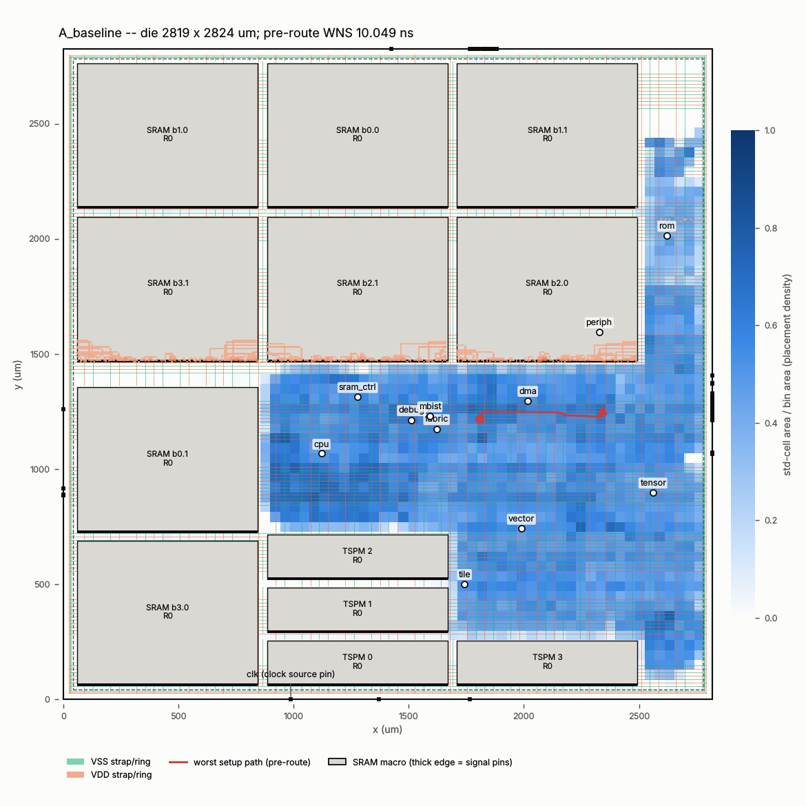
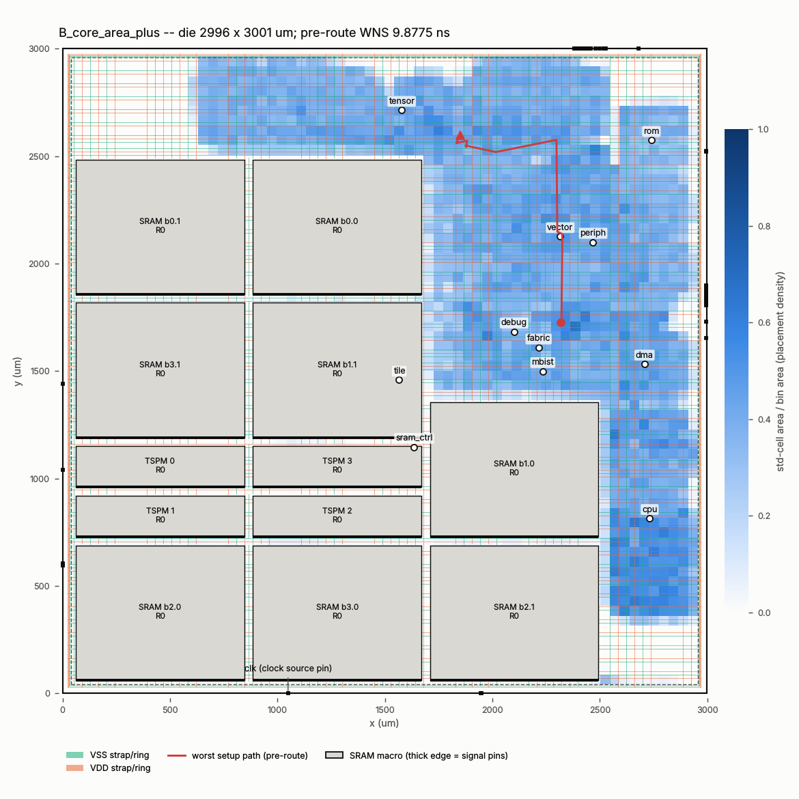

Measured OpenROAD/OpenSTA results. Timing is pre-route (placement parasitics, ideal clocks); routing is a preliminary global route; nothing here is signoff. Invalid runs are shown in red/grey and never ranked. Pareto set: none.
| run | status | die mm2 | WNS ns | reg2reg ns | GRT overflow | GRT WL mm | failed gates |
|---|---|---|---|---|---|---|---|
| A_baseline | completed_with_gate_failures | 7.960 | 10.049 | n/a | 2339.000 | 9356.920 | 12 |
| B_core_area_plus | running | 8.992 | 9.877 | n/a | n/a | n/a | 12 |
| C_sram_near_compute | running | 7.966 | 9.740 | n/a | n/a | n/a | 9,10 |
| D_logic_consolidated | running | 7.966 | 9.971 | n/a | n/a | n/a | 9,10 |
| E_pdn_corridors | failed | 8.313 | n/a | n/a | n/a | n/a | 10 |
| L_periphery_rows | failed | 7.966 | n/a | n/a | n/a | n/a | 10 |
| L_west_east_columns | running | 10.379 | 9.812 | n/a | n/a | n/a | |
| S_sky130_baseline | failed | n/a | n/a | n/a | n/a | n/a |

